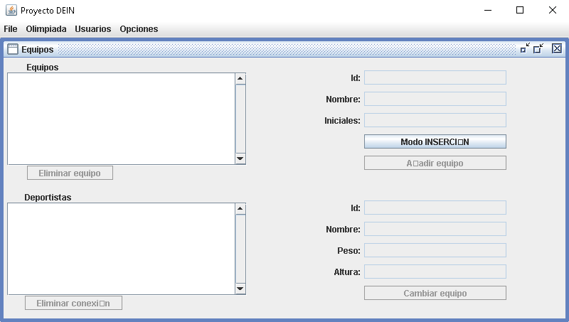

Esta ventana permite la visualización, edición e inserción de equipos en la tabla Equipo. A parte de eso, también podremos visualizar los deportistas que pertenezcan al equipo seleccionado y otro tipo de acciones.
Visualización de equipos: Al abrir la ventana, esta visualizará todos los equipos encontrados en la tabla Equipo. Solo se permitirá la selección de un equipo y esta selección actualizará los campos identificador, nombre e iniciales que se situarán a la derecha de la lista. A parte de esto, se cargará una lista de deportistas encontrada en la parte inferior del marco con todos los deportistas que pertenezcan al equipo seleccionado y se habilitará el botón “Eliminar equipo”, que permitirá la eliminación de este. Cabe destacar que la lista de equipos también visualizará al equipo “Sin asignar”, equipo que al ser seleccionado nos permitirá ver todos los deportistas que se encuentren actualmente sin equipo.
Inserción de equipos: Al presionar en el botón “Modo INSERCIÓN” podremos editar los campos de texto identificador, nombre e iniciales y se habilitará el botón “Añadir equipo”. Esto nos permitirá introducir valores para un nuevo equipo que serán introducidos en la tabla tras una validación. Una vez añadido el nuevo equipo, el botón “Añadir equipo” volverá a deshabilitarse.
Visualización de deportistas: Solo se permitirá la selección de un deportista y esta selección actualizará los campos identificador, nombre, peso y altura que se situarán a la derecha de la lista. A parte de esto, se habilitará el botón “Eliminar conexión”, que permitirá la eliminación de la conexión entre el deportista y el equipo al que pertenece. También se habilitará el botón “Cambiar equipo”, que hará aparecer una lista de equipos en la que deberemos elegir un nuevo equipo para el deportista.
* Sin importar el modo que se utilice para ejercer cambios en la base, la información visualizada será actualizada para mostrar siempre los datos más recientes.